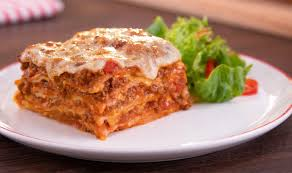

Go back to main page
Lasagna

Description:
Lasagna is a classic Italian dish made with layers of pasta, sauce, and melted cheese. It’s perfect for family lunches and combines flavor and creaminess in every bite.
Ingredients:
- Pre-cooked lasagna noodles
- 500g (1 lb) ground beef
- 1 chopped onion
- 2 cloves of garlic
- 1 can of tomato sauce
- 300g (10 oz) mozzarella cheese
- 200g (7 oz) sliced ham
- Salt, pepper, and oregano to taste
Steps:
- Sauté the ground beef with garlic and onion
- Add the sauce, and season
- In a baking dish, layer sauce, pasta, ham, and cheese
- Repeat the layers and finish with cheese on top
- Bake at 200 °C (390 °F) for about 30 minutes